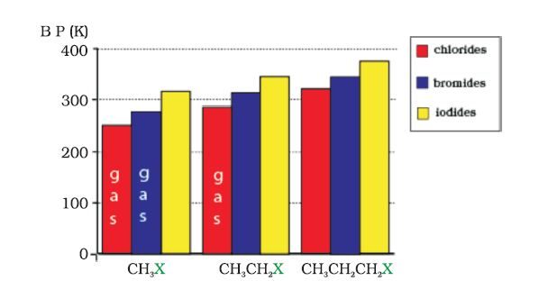
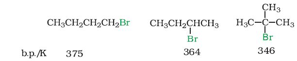
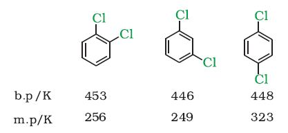

Alkyl halides are colourless when pure. However, bromides and iodides develop colour when exposed to light. Many volatile halogen compounds have sweet smell.
Melting and boiling points
Methyl chloride, methyl bromide, ethyl chloride and some chlorofluoromethanes are gases at room temperature. Higher members are liquids or solids. As we have already learnt, molecules of organic halogen compounds are generally polar. Due to greater polarity as well as higher molecular mass as compared to the parent hydrocarbon, the intermolecular forces of attraction (dipole-dipole and van der Waals) are stronger in the halogen derivatives. That is why the boiling points of chlorides, bromides and iodides are considerably higher than those of the hydrocarbons of comparable molecular mass.
The attractions get stronger as the molecules get bigger in size and have more electrons. The pattern of variation of boiling points of different halides is depicted in Fig. 10.1. For the same alkyl group, the boiling points of alkyl halides decrease in the order: RI> RBr> RCl> RF. This is because with the increase in size and mass of halogen atom, the magnitude of van der Waal forces increases.
Fig. 10.1: Comparison of boiling points of some alkyl halides
The boiling points of isomeric haloalkanes decrease with increase in branching (Unit 12, Class XI). For example, 2-bromo-2-methylpropane has the lowest boiling point among the three isomers.

Boiling points of isomeric dihalobenzenes are very nearly the same. However, the para-isomers are high melting as compared to their orthoand meta-isomers. It is due to symmetry of para-isomers that fits in crystal lattice better as compared to ortho- and meta-isomers.

Density
Bromo, iodo and polychloro derivatives of hydrocarbons are heavier than water. The density increases with increase in number of carbon atoms, halogen atoms and atomic mass of the halogen atoms (Table 10.3).Table 10.3: Density of Some Haloalkanes
| Compound |
Density (g/mL) |
Compound | Density (g/mL) |
| n–C3H7Cl | 0.89 | CH2Cl2 | 1.336 |
| n–C3H7Br | 1.335 | CHCl3 | 1.489 |
| n-C3H7I | 1.747 | CCl4 | 1.595 |
Solubility